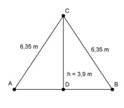

Pythagoras Aufgabe 20 a) Berechnen Sie die Fläche A des Dreiecks in m2. b) Die Fläche wird gestrichen. Der Verbrauch an Farbe beträgt 1 l pro 5 m2. Wie viel l Farbe sind nötig?

a) Im gleichschenkligen Dreieck halbiert die Höhe die Grundseite. Satz von Pythagoras im Dreieck ADC: AC2 = AD2 + DC2 | -DC2 AD2 = AC2 - DC2 AD = 6,352 m2 - 3,92 m2 = 25,1 m2 |√ AD = = 5 m AB = 2 * AD = 2 * 5 m = 10 m AB * h 10 m * 3,9 m A = -------- = -------------- = 19,5 m2 2 2 b) 1 l Menge = l/m2 * A = ------ * 19,5 m2 = 3,9 l 5 m2